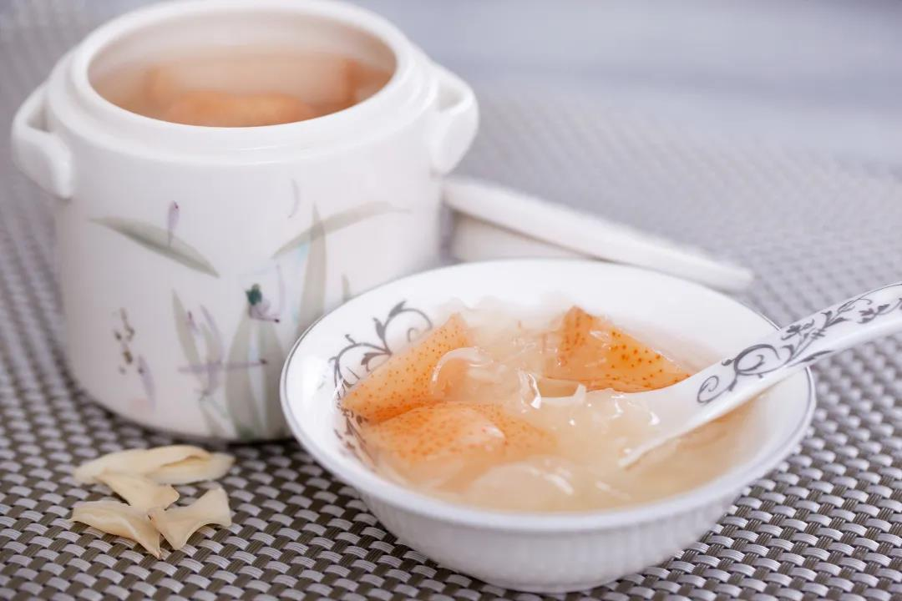
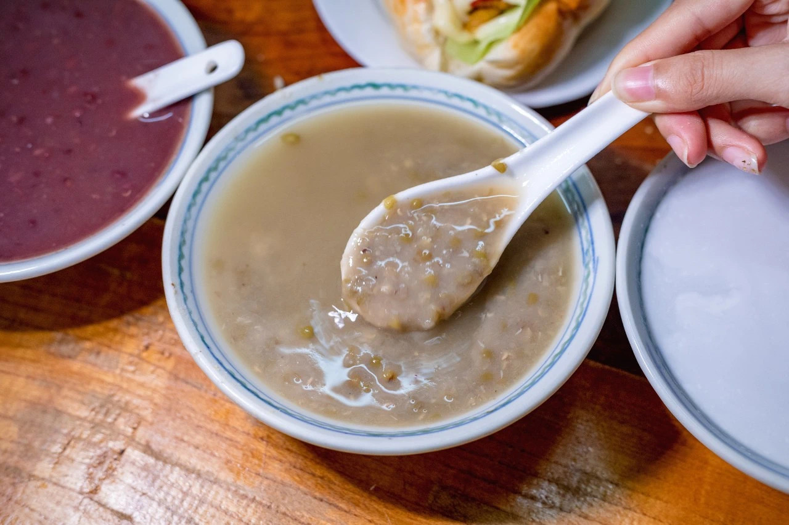
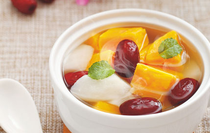
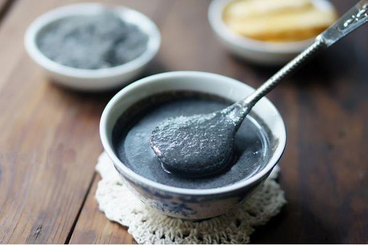
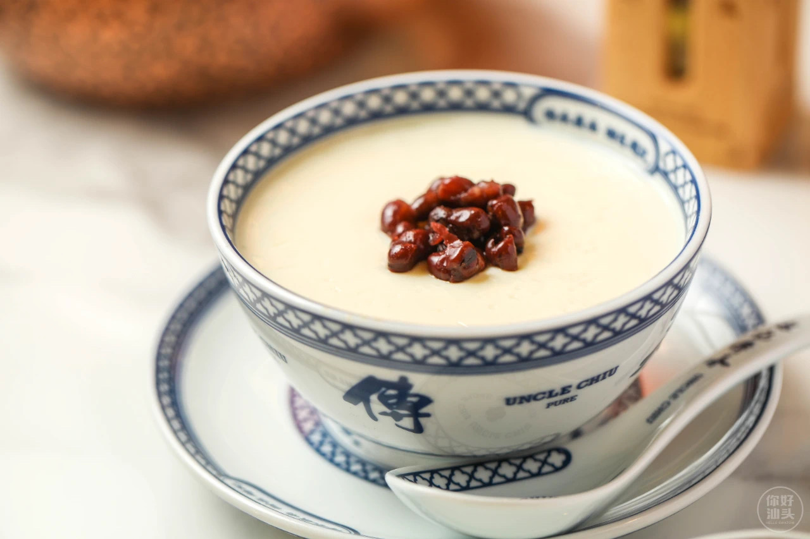
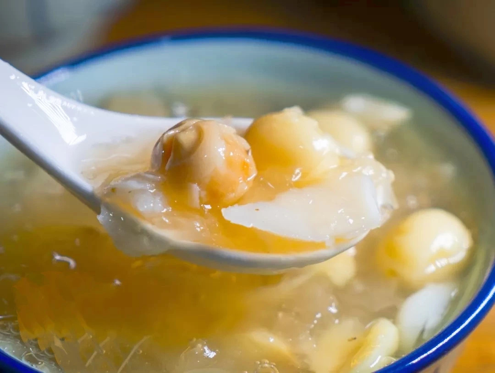

历史背景
广东糖水历史悠久，其起源可以追溯到古代王公贵族宴会后吃的一种甜汤，其功能主要是调和食气，帮助消化。


广东糖水的起源和当地的气候环境密不可分，广东气候湿热，讲究调养的人们逐渐放弃了比较燥热的药补，而采用更加温和的食补来调养身体，如利用猪肉、鸡肉、鱼肉和各种蔬菜水果，搭上温性或良性的中药材，熬煮成补品，即所谓的“煲汤”。后来，广东人慢慢将煲汤的滋补观念延申至甜品上，发展出各种各样的“糖水”。


民国初年，各式糖水店在广州开始逐渐兴起。此时，虽然甜品店众多，但每家店都有主题，代表性产品有绿豆沙、芝麻糊和番薯糖水等。

上世纪二十年代末至三十年代期间，广州糖水进入黄金时代，糖水店更见兴旺。当时的花色品种丰富多彩，而且渐趋高档，奶制品渐渐成为了糖水的时尚代表，如窝蛋奶、炖奶、奶茶、奶莲、凤凰奶糊、姜撞奶、杏奶、金银奶、咖啡奶、谷古奶等等。

到了上世纪六七十年代，由于受文革的影响，广东糖水进入了沉寂期。改革开放后，广东糖水又重放异彩。在品种上除了保留传统的样式，如番薯糖、红豆沙、绿豆沙、芝麻糊、莲子桂圆羹、杏仁糊、花生糊、双皮奶等，还增加了很多新的种类，如炖燕窝和炖雪蛤膏等。
相信随着社会的发展以及人们饮食习惯的改变，一些新的食用原料将不断运用到糖水中去，使得广东糖水的品种更为多样，内涵也更加丰富。